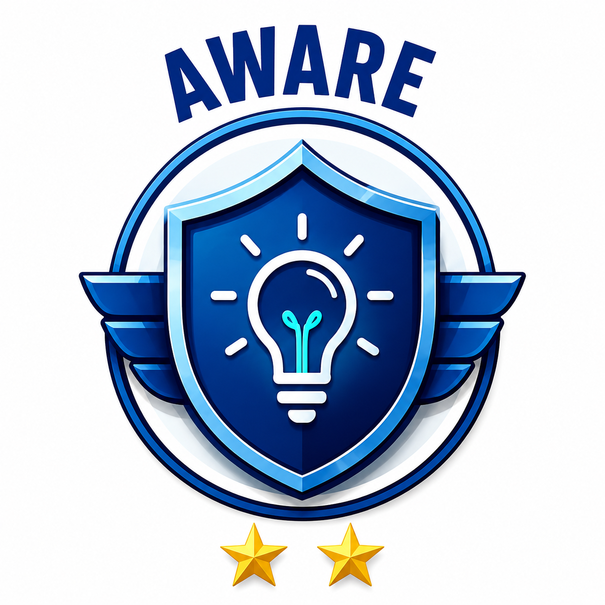

ভেরিফাইড ব্যাজ ও অর্জনের মানদণ্ড
Earn official digital credentials by completing modules, conducting real-world missions, and demonstrating leadership.
Each badge represents an escalation in skill — from foundational knowledge to hands-on action and community leadership. Badges are tied to your unique Onnoy ID and can be featured on your academic profile, resume, and social media.
Certifies that a student understands digital footprint dynamics, online attention algorithms, phishing scams, and ethical AI practices.

Certifies active application of critical judgment in the real world: debunking misinformation, running privacy audits, and building healthier digital habits.
The premier honor for student ambassadors who advocate for digital ethics, guide peers against scams, and foster independent thinking across Bangladesh.
Every badge earned is permanently stamped with your unique student identifier (e.g., ONNOY-748291). Teachers, employers, and admission panels can verify your achievements directly via Onnoy's public verification portal.